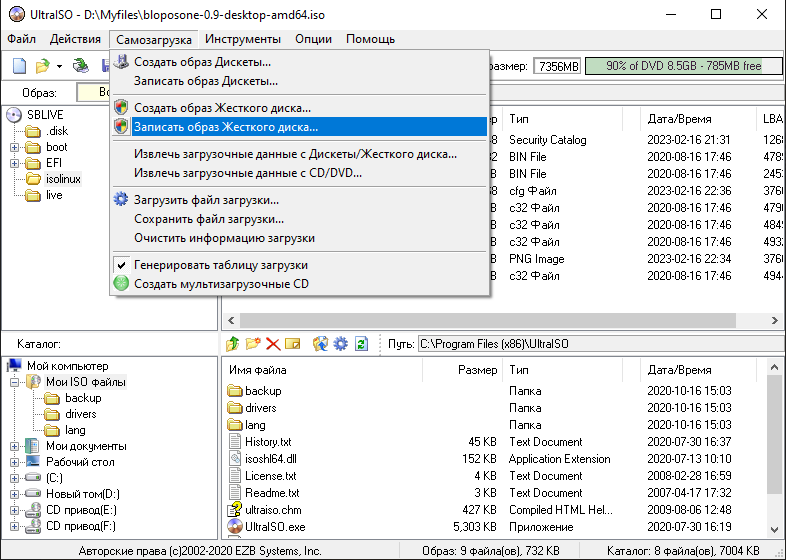
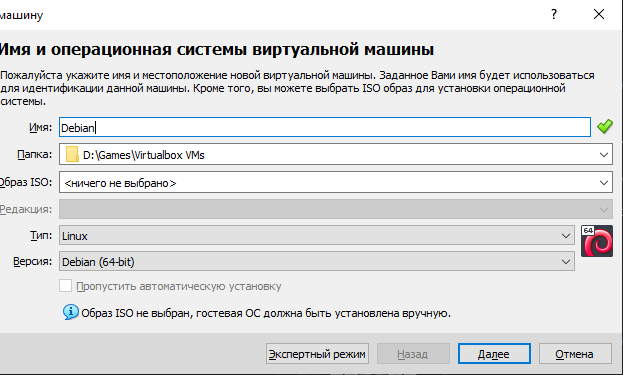
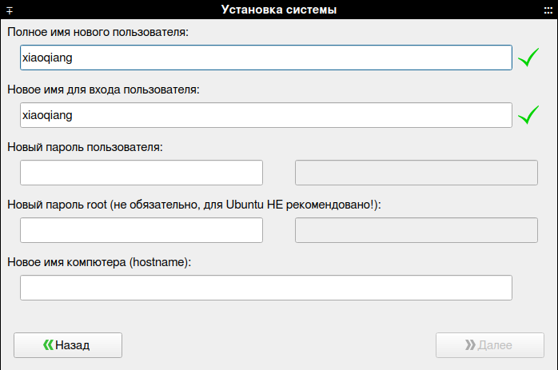
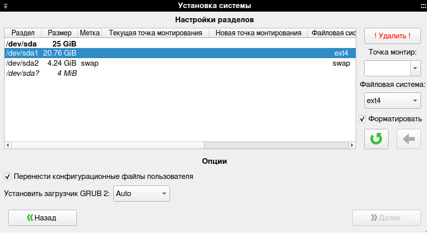
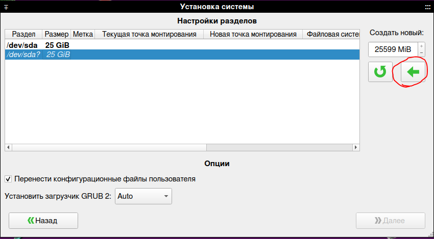
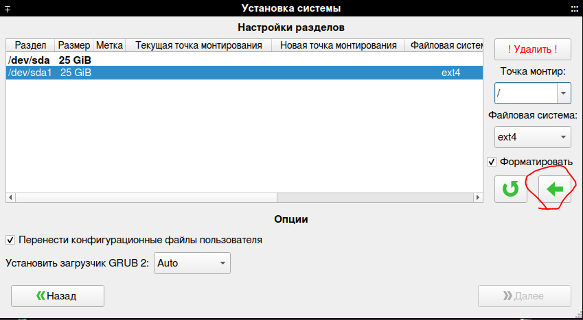

|  | Чтобы установить Блоп ОС на настоящее железо надо иметь флешку на 8 гб и больше. Потом на свой компьютер установить программу UltraISO. Потом надо на .iso файл Блоп ОС нажать правой кнопкой мышки, потом выбрать пункт "Открыть с помощью" и нажать тут на программу UltraISO. Потом надо тут нажать на "Самозагрузка", потом на "Записать образ жёсткого диска", и в окне надо выбрать в "Disk Drive" своб флешку а потом на кнопку "Записать" и потом ждём когда на флешку запишиться образ Блоп ОС. А когда будет всё готово то тогда иди к Установке Блоп ОС |
|  | Если вы не хотите устанавливать на свой компьютер Блоп ОС то вы можете его установить на Виртуальную машину. Надо скачать виртульную машину VirtualBox а потом его установить. Когда вы его откроете то надо нажать на кнопку "Создать", а потом выбираете тип и версию как на картинке, потом вы выбераете 2 гб ОЗУ чтобы Блоп ОС хорошо работал, потом вы выбераете 40 гб памяти чтобы она вообще установилась. а потом запускаете виртуалку с Блоп ОС, выбираете тут образ с Блоп ОС а потом идите к Установке Блоп ОС |
|  | А теперь идём к установке Блоп ОС! Когда вы загрузитесь в Блоп ОС то надо на рабочем столе нажать один раз на "Установка Блоп ОС", дальше надо нажать на конпку "Установить Систему", мы видем тут окно с заполнением информации о пользователе, тут пароль надо вводить ОБЯЗАТЕЛЬНО! Когда вы всё заполнели то нажимаем кнопку далее и мы видем разметку дисков. Теперь тут самое сложное, разметка дисков. Мы тут выбераем раздел для установки Блоп ОС, а потом нажимаем на кнопку удалить |
 |
|  | Теперь когда у нас раздел удалился надо нажать на зелёную стрелочку, потом когда у нас создадится раздел то надо выбрать точку монтирования /, потом опять нажимаем на зелёную стрелочку а потом на кнопку далее и ждём пока установится Блоп ОС. Когда у нас установиться Блоп ОС то мы перезагружаемся и у нас теперь есть Блоп ОС! |
 |